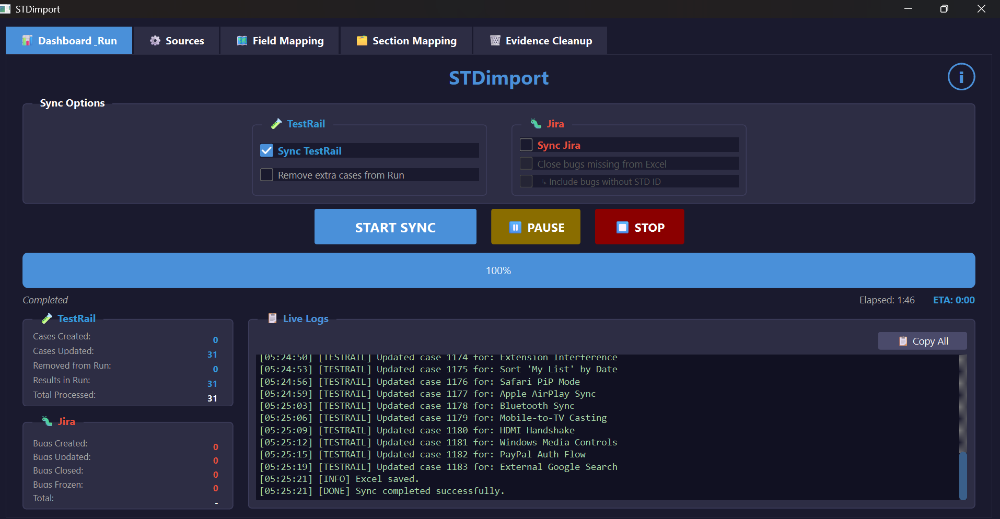
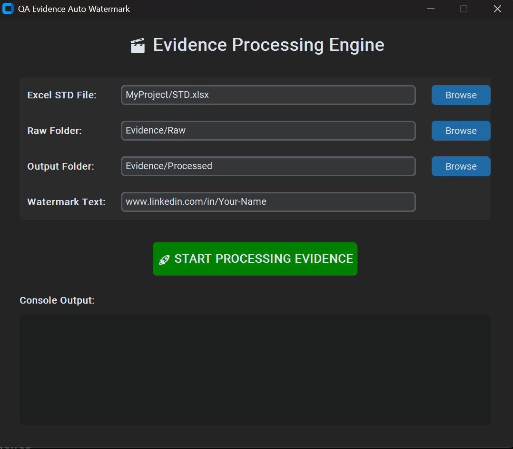

The QA Engineer For You
Applying solid QA knowledge and professional life experience
to rigorously test and improve product integrity.
About Me & Motivation
Passionate QA Engineer with strong motivation and unstoppable energy.
Currently focusing on mastering Python for test automation.
Graduate of Automation College – Gal Matalon.
Skilled in both Manual and Automation Testing.
Core Competencies
Fast learner with sharp analytical thinking and a problem-solving mindset. Always curious and exploring new tools and technologies to stay ahead.
Teamwork & Dedication
Strong team player with excellent communication skills. Committed to delivering real value and ensuring high-quality software. Eager to join a forward-thinking organization.
My Advantages and Skills
⚙️ Technical Skills
- Automation & Programming: Foundational knowledge of Python for test scripting and experience with Automation Framework concepts.
- Database Testing: Proficient in writing and executing SQL queries (including Joins) for data validation.
- API Testing: Practical experience using Postman for API testing.
- Test Management: Strong command of JIRA for bug tracking and workflow management.
- Web & Mobile Testing: Expertise in Web Testing (Chrome, Edge, Firefox) and Mobile Testing (iOS, Android).
- Web Technologies: Working knowledge of HTML and CSS, experienced with DevTools for debugging.
- Methodologies: Proven experience with Agile and Waterfall methodologies.
- Environment: Solid experience with Windows OS.
❤️ Core Competencies
- Analytical & Critical Thinking: Strong analytical thinking, exceptional attention to detail, and a keen problem-solving mindset.
- Learning & Growth: Fast and self-directed learner, highly curious and proactive in exploring new tools and technologies.
- Communication & Collaboration: Excellent written and verbal communication, strong team player, experienced in Agile environments.
- Professional Discipline: Highly independent, self-disciplined, and proficient at prioritizing tasks under pressure.
- Commitment to Quality: Dedicated to high-quality software delivery and optimal User Experience (UX).
🎬 Netflix QA Project — Full Software Test Report
Independent, unofficial QA training & portfolio project — not affiliated with, endorsed by, or sponsored by Netflix, Inc. Evidence screenshots are reduced/blurred and Security-category defects are fully redacted throughout the public report.
A hands-on, end-to-end manual QA cycle against a Netflix-style streaming platform (web & mobile): 301 documented test cases across twelve disciplines — Functional, UI/UX, Usability, Accessibility, Localization, Security, Performance, Load, Survival, Recovery, Compatibility and Integration — executed on desktop Chrome, a real Android device (Samsung Galaxy A56), and confirmatory passes on Firefox and Brave. Every failed case produced exactly one traceable Jira defect, triaged by severity from Show-Stop down to Low.
The whole pipeline runs from a single Excel workbook (STD.xlsx), synced bi-directionally to Jira and TestRail through two custom automation tools built specifically for this project — STDimport and QA Evidence Auto-Watermark — so every test case, result and piece of evidence stays in sync across all three systems automatically.
📄 View Full Report (PDF)🗂️ Projects & Portfolio
A few of the automation tools I've built to support my own QA work, alongside the rest of my repos on GitHub.

STDimport
Desktop app (PySide6) that syncs a QA results Excel workbook bi-directionally with Jira and TestRail — creates/updates/closes bugs, upserts test cases, uploads evidence, with pause/resume and network-loss resilience.
Private repo
QA Evidence Auto Watermark
Desktop tool that reads bug metadata straight from an Excel STD file and automatically embeds severity-color-coded watermarks into screenshots and screen recordings — no more manual labeling of evidence.
View on GitHub →STR Builder
Compiles a complete Software Test Report (.docx) in one click from a test-results workbook and a live Jira defect pull — charts, color-coded tables, per-defect pages and a designed cover, fully generated automatically.
Private repoReach Out
I'll be happy to assist you and answer any questions.